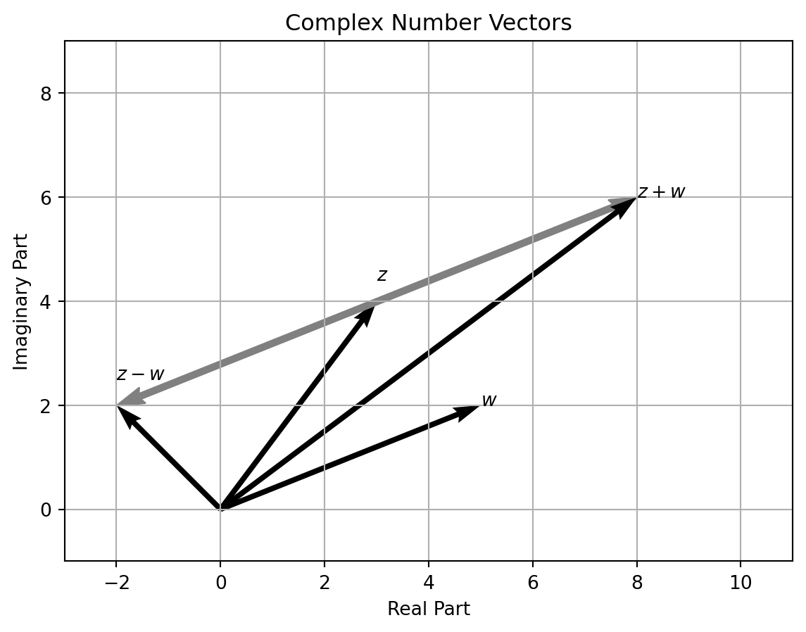

Code
import matplotlib.pyplot as plt
import numpy as np
# Define the complex numbers
alpha1 = 3 + 4j
alpha2 = 5 + 2j
alpha3 = alpha1 + alpha2
alpha4 = alpha1 - alpha2
# Extract the real and imaginary parts
a1_real, a1_imag = alpha1.real, alpha1.imag
a2_real, a2_imag = alpha2.real, alpha2.imag
a3_real, a3_imag = alpha3.real, alpha3.imag
a4_real, a4_imag = alpha4.real, alpha4.imag
# Create the plot
fig, ax = plt.subplots()
# Plot the vectors
ax.quiver(0, 0, a1_real, a1_imag, angles="xy", scale_units="xy", scale=1, color="k")
ax.quiver(0, 0, a2_real, a2_imag, angles="xy", scale_units="xy", scale=1, color="k")
ax.quiver(
a1_real,
a1_imag,
a2_real,
a2_imag,
angles="xy",
scale_units="xy",
linewidth=1,
scale=1,
edgecolor="gray",
color="gray",
)
ax.quiver(0, 0, a3_real, a3_imag, angles="xy", scale_units="xy", scale=1, color="k")
ax.quiver(0, 0, a4_real, a4_imag, angles="xy", scale_units="xy", scale=1, color="k")
ax.quiver(
a1_real,
a1_imag,
-a2_real,
-a2_imag,
angles="xy",
scale_units="xy",
linewidth=1,
scale=1,
edgecolor="gray",
color="gray",
)
# add point
ax.text(a1_real, a1_imag * 1.1, "$z$")
ax.text(a2_real, a2_imag, "$w$")
ax.text(a3_real, a3_imag, "$z+w$")
ax.text(a4_real, a4_imag + 0.5, "$z-w$")
# Set the plot limits
ax.set_xlim(a4_real - 1, max(a1_real, a3_real) + 3)
ax.set_ylim(-1, max(a1_imag, a3_imag) + 3)
# Add grid, labels, and legend
ax.grid()
ax.set_aspect("equal")
ax.set_xlabel("Real Part")
ax.set_ylabel("Imaginary Part")
# Add title
ax.set_title("Complex Number Vectors")
# Show the plot
plt.show()